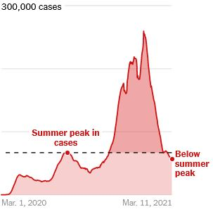
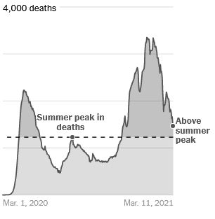
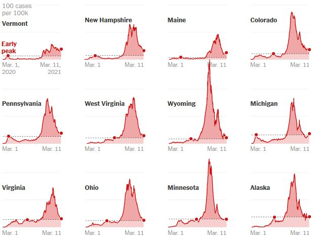
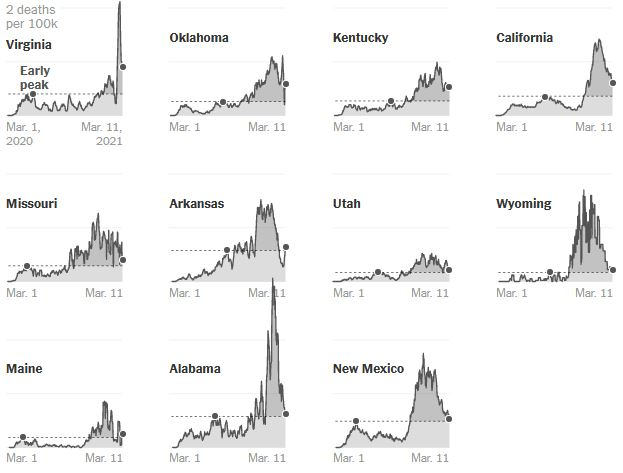

Coronavirus cases are trending downward across the United States as the country’s vaccine rollout picks up speed. But despite the large drop in new infections since early this year, the U.S. death rate remains at nearly 1,500 people every day. That number still exceeds the summer peak, when patients filled Sun Belt hospitals and outbreaks in states that reopened early drove record numbers of cases, though daily deaths nationwide remained lower than the first surge last spring. The number of new reported cases per day remains nearly as high as the summer record.
At the same time, officials in Texas and Mississippi have lifted mask mandates while other states are ending capacity limits on businesses
Avg. new U.S. cases reported by day
Avg. new U.S. deaths reported by day
Note: Days with reporting anomalies are removed from the calculation of the seven-day average.·Source: New York Times database of reports from state and local health agencies.
Most experts believe that the worst days of the U.S. coronavirus outbreak are behind us. About 66 million Americans have been at least partially vaccinated , and the rate of doses administered has risen to about 2.3 million per day from around 1.2 million per day in late January and continues to grow.
Combining the numbers of those vaccinated and estimates of those who have already had the virus could mean that about 40 percent of U.S. residents now have some protection from the virus, according to one analysis . And President Biden on Thursday called on states to make vaccines available to all U.S. adults by May 1.
But experts also warn the country is not in the clear yet: Variants of the virus that are more contagious threaten to drive cases upward again, especially if there are fewer measures in place to control transmission. And states where any new surges are starting from a higher point could be at particular risk.
The average number of new cases per day has dropped more than 75 percent since the peak on Jan. 8, but the drop in deaths started a few weeks later and has not been as steep. Reported Covid deaths often lag positive cases by up to several weeks, which could help explain why the death rate nationally still exceeds its summer peak while new cases do not.
States where reported cases are higher than spring or summer record
States where reported deaths are higher than spring or summer record
Note: Shows seven-day averages. Cases and deaths are shown by date reported, not by date of death or positive result. State data may be affected by reporting anomalies and delays. Each state’s early peak shows the record number of cases or deaths on or before Sept. 14, which was the day the U.S. seven-day average of cases hit a low point before it began to rise again in the fall. Days with significant reporting anomalies are removed from the calculation of the seven-day average.·Source: New York Times database of reports from state and local health agencies.
“While these trends are starting to head in the right direction, the number of cases, hospitalizations and deaths remain too high and are somber reminders that we must remain vigilant as we work to scale up vaccination efforts,” said Dr. Rochelle Walensky, the director of the Centers for Disease Control and Prevention, in a White House Covid response briefing on Wednesday. “We must continue to use proven prevention measures to slow the spread of Covid-19. They are getting us closer to the end of this pandemic.”
A C.D.C. study from last week offered new evidence that prevention measures work to stop transmission: Mandating masks was associated with a drop in cases and deaths, while an increase in cases and deaths was associated with opening in-person dining. Dr. Walensky called the report a warning against prematurely lifting control measures.